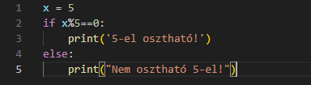
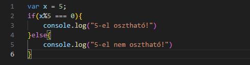

1. Bevezetés a Pythonba
Mi is az a Python?
Röviden: egy népszerű programozási nyelv, amelyet Guido van Rossum készített 1991-ben.
2022-ben az első helyet foglalta el a programozási nyelvek között.
- Szerver oldali programozás
- Szoftverfejlesztés
- Matematika
- Rendszer szkriptek
Miért jó a Python?
- Platformfüggetlen (Windows, Mac, Linux, Raspberry Pi stb.).
- Egyszerű szintaxis: angol szavakra épül.
- Interpreter nyelv: nem kell előre lefordítani.
- Procedurális, funkcionális vagy objektumorientált módon is használható.
Interpreter vs Compiler
| Interpreter | Compiler |
|---|---|
| Sorról sorra fordítja le a kódot. | Egy az egyben lefordítja a forráskódot. |
| Gyorsabb fordítás, de lassabb futás. | Hosszabb fordítási idő, de gyorsabb futás. |
| Nem hoz létre objektumkódot. | Objektumkódot generál, ami több memóriát igényel. |
|  |  |
Python jellemzői
- Olvasható, mint az angol nyelv.
- Új sorokat használ a parancsok végrehajtására.
- Behúzásokkal (tabulátor, szóköz) határozza meg a blokkokat.
Első Python program
print("Hello, világ!")A megjegyzésekhez a # karaktert használjuk.
Új sor használata:
print("Szia, világ!\nEz egy új sor!")Gyakorló Feladatok:
- Írd ki a saját neved!
- Írd ki a neved és a barátod nevét egymás alá!
- Írd ki a világ legjobb programozási nyelvét!